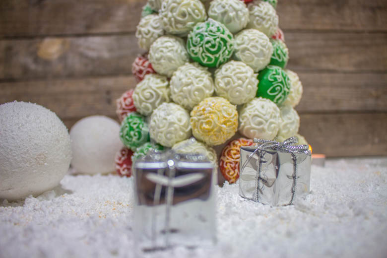
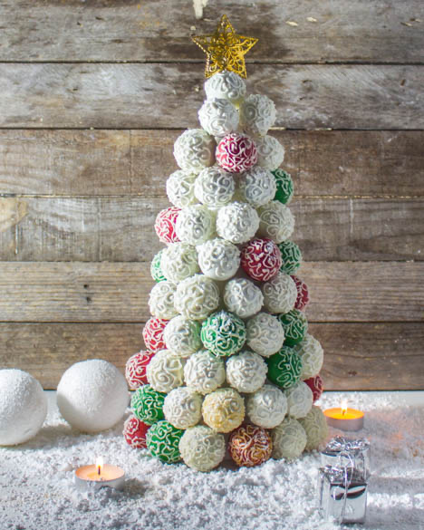
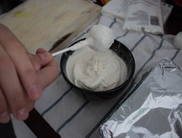
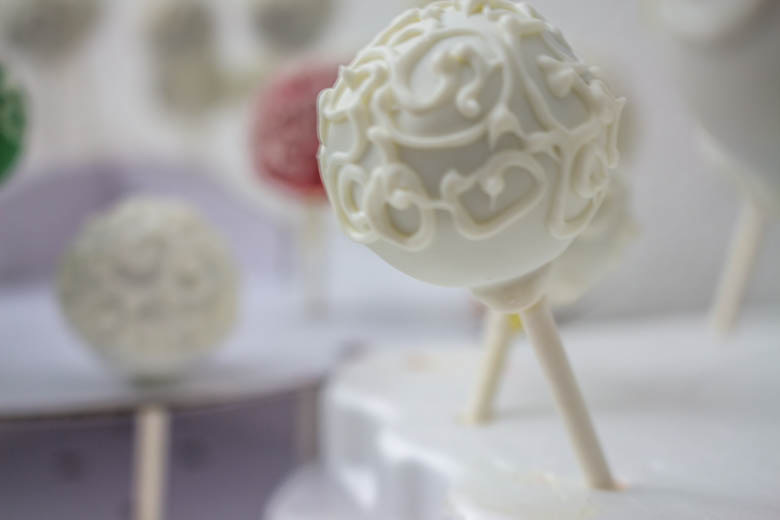
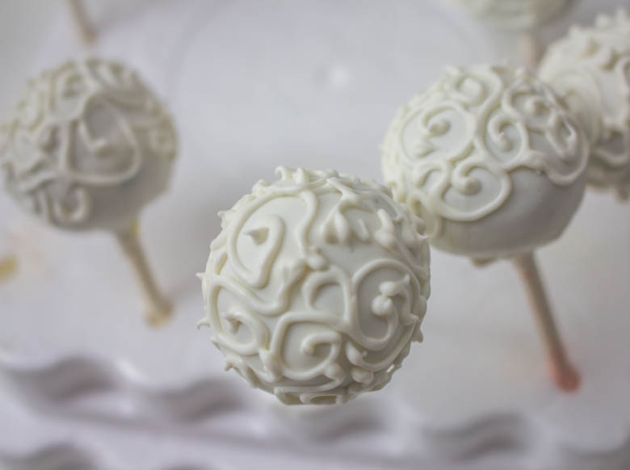
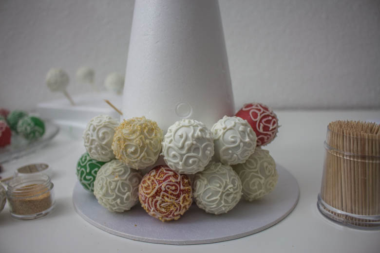
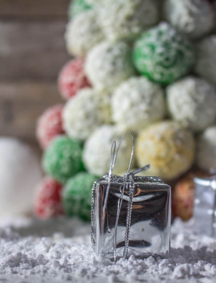
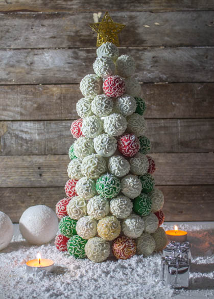

Cake pops de Noël

Dans un mois ce sera la belle nuit de Noël alors voila une petite idée qui à mon avis pourra faire son petit effet pour ceux et celles qui auront un peu (beaucoup) de temps pour cuisiner!
Pour ceux qui me suivent sur facebook, je ne sais pas si vous vous en souvenez mais je vous avais parlé d’une recette qui me tenait particulièrement à cœur alors la voici: mon arbre en cake pops de Noël!!
En effet, cela faisait un bout de temps que j’avais l’idée de réaliser cette recette à l’occasion des fêtes de Noël! Hélas je travaille pour les fêtes et je manquerai donc cruellement de temps pour réaliser ce type de gâteau! Comme il s’agit d’une recette pour les fêtes et que plus particulièrement pour Noël j’ai quand même envie de rappeler ce que signifie vraiment cette tradition. En effet, saviez vous que ce terme en latin « dies natalis » signifie « jour de la naissance », et plus précisément la naissance de Jésus de Nazareth à Bethléem. Pourtant au fil des années ce jour perd selon moi de plus en plus son sens premier et se transforme petit à petit en une véritable fête commerciale et je trouve cela dommage.
J’adore cependant toute la magie qu’apporte Noël et l’effervescence qu’elle génère un peu partout dans le monde. Les décorations, les plats et les couleurs que l’on retrouve à ce moment là de l’année apporte un peu de chaleur dans nos maisons.
Pour en revenir à ma recette j’ai voulu recréer un peu cette ambiance féérique en réalisant un arbre de Noël en cake pops. J’ai attendu ce moment pour le faire car nous sommes pile à un mois de Noël et ça collait parfaitement avec le thème proposé par petits béguins pour la battle food#26 « Recette de Noël ». La battle food qui est tout simplement un défi culinaire entre blogueurs et non blogueurs autour d’un thème choisi et auquel j’adore participer!
Me voilà donc un vendredi de libre en train de me torturer l’esprit sur comment réaliser cet arbre en cake pops de Noël! J’ai donc rassemblé tout le matériel nécessaire et j’y suis allée quelque peu à tâtons tout en gardant bien en tête le résultat que je voulais ABSOLUMENT obtenir!
J’ai choisi de réaliser des cake pops de Noël à la pistache et au chocolat blanc ainsi que des cake pops au chocolat et à la cannelle!! J’ai réalisé 100 cake pops qui pesaient entre 14 et 17g chacun et il m’en a fallu 92 pour réaliser le sapin en entier! Inutile de vous dire qu’il faut du temps devant soi pour réaliser cette recette.
A présent je vous laisse découvrir la recette en espérant qu’elle vous plaira 🙂 et si vous avez des enfants c’est un très bon atelier cuisine à leur faire faire pendant les vacances ou les loooongs dimanches tout gris qui nous attendent!
Ingrédients
- Oeufs - 4
- Farine - 180g
- Sucre - 180g
- Beurre - 180g
- Philadelphia ou autres cream cheese - 80g
- Pistaches émondées - 65g
- Levure chimique - 4càc
- Philadelphia ou autres - 150g
- Candy melt blanc, rouge, vert comme vous voulez - 1 paquet
- Huile végetale
- Beurre pommade - 125g
- Chocolat - 200g
- Cannelle en poudre - 1 càs
- Oeufs - 3
- Sucre - 125g
- Farine - 100g
- Candy melt de la couleur de votre choix - 1 paquet
- Philadelphia ou autres - 150g
- Huile végétale
- Candy melt blanc
- Poches à douille
- Douille n°1 de Wilton
- Paillettes alimentaire dorées
- Cure dents
- Cône en polystyrène de 30cm
Instructions
- Préchauffer le four à 180°
- Moudre les pistaches afin qu'elles deviennent de la poudre - Réserver
- Dans une jatte, mélanger le beurre mou avec le sucre jusqu’à ce que le mélange devienne mousseux
- Battre les œufs et les incorporer petit à petit au mélange précédent
- Ajouter 80g de philadelphia
- Mélanger la farine et la levure et l'incorporer à la préparation
- Pour finir ajouter la poudre de pistache.
- Bien mélanger pour obtenir une préparation bien homogène
- Laisser refroidir
- Au bain marie, faire fondre le beurre et le chocolat
- Préchauffer le four à 180°
- Dans un grand récipient, battre les œufs et le sucre
- Ajouter la farine et la cannelle petit à petit et mélanger jusqu'à obtenir une pâte bien homogène
- Verser le chocolat fondu et mélanger
- Beurrer votre moule et verser la pâte
- Enfourner à 180° pendant 25 minutes
- A la sortie du four, démouler le gâteau et laisser le refroidir
- Passer les gâteaux un par un au mixeur ou émietter-les en les coupant en deux et en frottant chaque part entre elles
- Une fois les gâteaux émiettés en totalité, ajouter le cream cheese (Philadelphia, StMoret etc..)
- Tasser la pâte à l'aide de vos mains afin d'obtenir une texture homogène (le cream cheese doit être totalement incorporé au gâteau)
- Former maintenant dans vos mains des petites boules de pâte (entre 14 et 17g pour cette recette)
- Les mettre au frais pendant 1h
- Pendant ce temps, faire fondre le candy melt selon les indications du paquet. (attention à ne pas faire comme moi et a laisser vos candy melt au micro onde sans les mélanger de temps en temps car ça va vite devenir du caramel!!!) Il faut mettre les candy melt dans un bol, les mettre au micro onde 15 sec, ouvrir et remuer (même si c'est pas fondu) Renouveler l’opération jusqu'à ce que ce soit fondu entièrement.
- Ajouter de l'huile végétale (ou du crisco ou encore de la végétaline) afin de liquéfier un peu le candy melt environ 3 càs pour un paquet
- Mettre le candy melt dans un bol avec suffisamment de profondeur pour pouvoir plonger entièrement votre cake pops
- Tremper les bâtons à cake pops dans le candy melt et planter les dans les cakes pops
- Remettre au frais pendant 15 min
- Tremper chaque cake pops dans le candy melt (il ne fait pas remuer la cake pop mais juste la tremper)
- Tapoter ensuite sur votre mains comme sur la photo tout en tournant votre cake pops pour faire tomber l’excédent de candy melt
- Planter vos cake pops dans du polystyrène et placez les au frais le temps que le glaçage durcisse
- Commencer par le bas du cône en polystyrène
- Introduire un cure dent ou un demi cure dent, selon la largeur du cône, incliné légèrement vers le haut
- Enfoncer ensuite un cake pops (après avoir enlevé son bâton bien entendu) sur le cure dent
- Continuer ainsi de suite jusqu'en haut du cône
- Une fois le dernier cake pop posé, enfoncé lui un cure dent à l’intérieur pour pouvoir y fixer l'étoile!








Les tips de la communauté
Travail remarquable et enthousiasme débordant de la communauté. Les lecteurs reconnaissent l'effort monumental derrière cette création. Le résultat est décrit comme magique, féerique et artistique.
Astuces
- Cette recette nécessite une grande patience et un investissement en temps
- La gâche au chocolat-cannelle doit utiliser la technique de génoise (battage oeufs-sucre)
- Les cake pops peuvent être préparés à l'avance et congelés
- Il existe des variations de saveurs (chocolat blanc, citron, pistache)
Variantes suggérées
- Utiliser des cake pops avec différentes saveurs (citron avec glaçage blanc, pistache, chocolat blanc)
- Adapter la coloration et la décoration selon les préférences personnelles
- Possibilité d'utiliser des paillettes alimentaires pour plus de brillance
Ajustements signalés
- juste un peu de patience c’est tout 🙂 Bisous
- que le mélange oeufs sucre soit bien bien mousseux comme pour une génoise? merci d’avance si vous avez le temps de me répondre. Passez de bonnes fêtes et je suis tombée par hasard sur votre blog que j’adore et l’ajoute donc à ma barre de favoris ..!